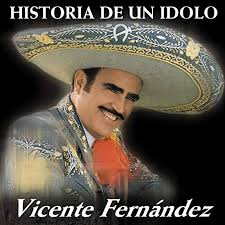
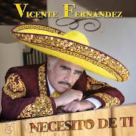
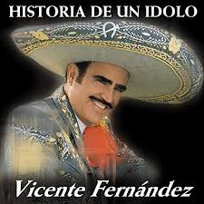
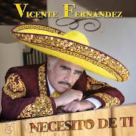

VICENTE FERNANDEZ
BIOGRAFIA
(Guadalajara, Jalisco; 17 de febrero de 1940),1 fue un cantante de música ranchera, empresario, productor discográfico y actor mexicano, padre del también cantante Alejandro Fernández, es considerado un símbolo de la cultura hispanoamericana y uno de los artistas más populares de México. Las contribuciones de Fernández a la música junto con su vida personal publicitada, le han convertido en una figura global y representativa de la cultura ranchera durante más de cinco décadas. Su trabajo le ha valido dos premios Grammy, ocho premios Grammy Latinos, catorce premios Lo Nuestro y una estrella en el paseo de la fama de Hollywood. En abril de 2010 alcanzó la cifra de 75 millones de copias vendidos en todo el mundo
DISCOGRAFIA
- 2018 Mas romantico que nunca
- 2016 Un azteca en el azteca
- 2015 muriendo de amor
- 2014 Mano a mano tangos
LANZAMIENTOS
.jpg) 



TOUR
| Fecha |
Ciudad |
Lugar |
| 2020 |
Bogota |
Campim |
| 2020 |
Argentina |
Bombonera |
| 2020 |
Mexico |
Azteca |
REDES SOCIALES